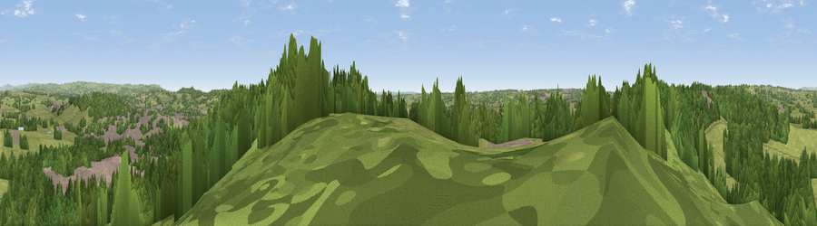

Viewpoint near Boundary
#22692 in England · top 29% of its area beats it · near Boundary · access?Where it is
The exact computed spot (SJ 99125 41825). Click the marker for map links.
Public access: no public right of way or access land is recorded at this exact spot — it may be on private land. Computed from Natural England's CRoW access layer and OpenStreetMap rights of way — not the legal definitive map. Always verify locally.
The view, rendered

A 360° render of this exact spot computed from the terrain model, tree cover and land cover — summer colours, afternoon light, calibrated against photographs of famous viewpoints. Real trees, hedges and buildings will differ in detail.
The panorama
Grey silhouette: terrain skyline in each direction (720 bearings, Earth curvature and refraction included). Dashed green: skyline with trees (+15 m) and buildings (+8 m) as obstacles. Blue strip: how far the ground is visible on each bearing.
Where the view opens
Wedge length = distance to the farthest visible ground on that bearing (vegetation-aware). Rings at 10, 25 and 50 km.
What fills the view
47% woodland · 42% grassland · 8% built-up · 4% cropland
Angular shares of the visible panorama (visual magnitude), not map area. Landscape diversity 0.46 (0–1 Shannon).
Key numbers
More beautiful places nearby
The staircase of upgrades: each row has a higher view potential than everything closer. Driving times are estimates from straight-line distance, calibrated against real road routing — check an actual route before setting out.
| Place | Direction | Drive | Score |
|---|---|---|---|
| Viewpoint near Huntley | E · 0 km | ~1 min | 50.9 |
| Viewpoint near Cheadle | E · 4 km | ~9 min | 61.0 |
| Viewpoint near Oakamoor | ENE · 8 km | ~16 min | 62.9 |
| Viewpoint near Cauldon Lowe | ENE · 11 km | ~21 min | 71.9 |
| Viewpoint near Wootton | ENE · 11 km | ~21 min | 74.8 |
| Tissington Hill | NE · 19 km | ~33 min | 75.5 |
| Viewpoint near Mow Cop | NW · 20 km | ~34 min | 80.2 |
| Viewpoint near Little Wenlock | SW · 49 km | ~70 min | 84.2 |
52.97378, -2.01448 · source: screening · position refined by local search. Computed location — check access rights before visiting.